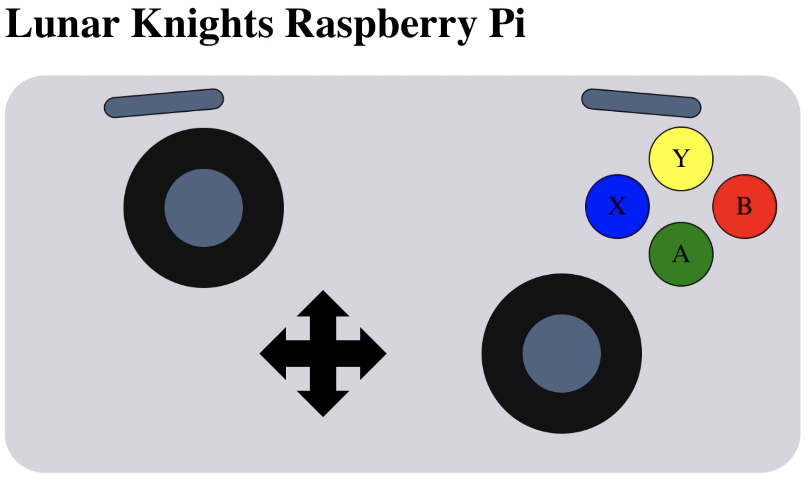

We will use ROS2 to control our robot with publishers and subscribers. To get started with development, use a ROS2 Docker container where you can use the core ros packages and gazebo.
For the month of October we will work on a few specific projects that require minimal physical robot access. Right now we will pitch 3 potential projects.
Goal: Create a ROS-enabled virtual robot in Gazebo.
Using a virtual robot to develop with will increase our ability to work quickly and asynchronously. We will work with the mechanical team to convert our robot CAD into the Unified Robot Description Format (URDF). Then, we will set up and develop relevant ROS plugins to control the virtual robot with ROS nodes.
<?xml version="1.0"?>
<sdf version="1.6">
<world name="default">
<model name='robot'>
<link name='body'> <!-- simulation info --> </link>
<link name='wheel'> <!-- simulation info --> </link>
<joint name='motor' type='revolute'>
<parent>body</parent>
<child>wheel</child>
<!-- simulation info -->
</joint>
<plugin name='skid_steer_drive' filename='libgazebo_ros_diff_drive.so'>
<!--parameters -->
</plugin>
</model>
</world>
</sdf>
Examples with Python and C++ API: https://github.com/ros2/examples.
# pub
node = rclpy.create_node('minimal_publisher')
publisher = node.create_publisher(String, 'topic', 10)
publisher.publish(String('Hello!'))
# sub
node = rclpy.create_node('minimal_subscriber')
subscription = node.create_subscription(
String, 'topic', lambda msg: node.get_logger().info('I heard: "%s"' % msg.data), 10)
Goal: Access robot information and control basic motions.
Controlling the robot with ROS is neat, but can be difficult to work with. We would like a visual dashboard to quickly see critical robot information. The goal is we can utilize this dashboard on any non-ROS device (such as a phone). The dashboard should have basic robot controls (shutdown, start task, etc) and access to all robot data (imu, current, etc). This project involves two parts: the front-end dashboard for browser viewing and the back-end server running on the robot.
| Current Plots | Gamepad Display |
|---|---|
|
 |
Goal: Determine the best and simplest way to get the robot working. Topics that may come up include motor drivers, the communication network, and sensors.
This is our primary goal. See the Getting the robot moving section for more info.
We may need to create/adapt some motor drivers to use with stepper and servo motors if mechanical needs them. This may involve soldering them to proto boards.
We will likely want some sensors (such as load cells) on our robot, after we finish the basic control of the robot, we will decide what sensors make the most sense.
Our primary goal is to get the robot's wheels to turn. Using our current hardware, this involves making sure the CAN bus works, learning what controls we can send/receive from the Talon SRX motor controllers (using the talon SDK, since they are not officially supported on Linux), and implementing what we learn into ROS.
The last time we attempted to get the robot moving we struggled to get the talons to communicate with our pi, so our first goal is to recreate the control system we had previously.
Currently, The robot consists of a Raspberry Pi 3B+, CANable USB-to-CAN adapter, and some FRC equipment (Talon SRX Bag motor[FRC BDC motors] controllers, Power Distribution Panel). We are using a c/c++ SDK to communicate with the talons over the CANable and controlling the robot using the dashboard and an xbox controller.
If we have difficulty with the talons, we may have to find some other smart motor controller, or create our own. However, this may take much more effort and create the possibility of not being able to finish the robot.
In the future, assuming we both have a working robot + control system and are have plenty of extra time, we will probably be looking into replacing the talons with a more closed-loop control design. This would give us the benefit of having precise control over the entire robot at the cost of man hours.